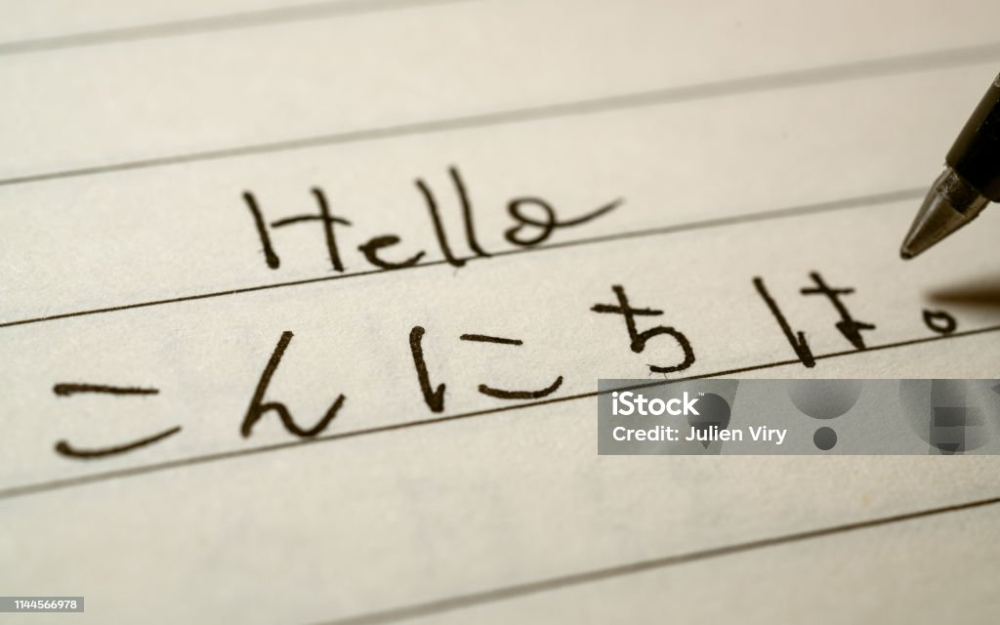

My Experience Learning Japanese
October 6, 2026 by Htut Aung

Learning Japanese has been an interesting experience for me, at first I thought it would be a walk in the park which for me it was at the beginning. I thought my passion for the Japanese Language would carry me through but with a lot of things in life passion needs to be fused with that hard work.Living a life in Japan has always been a dream of mine but sometimes the work needed to learn has made me reconsider and second guess myself. As I kept on learning I figured it wasn't as bad anymore and moreso fun and exciting. This made it evident to me of even how hard learning a new language is, I just enjoyed learning new words to be able to communicate with new people and even getting acknowledged by people knowing I respect their culture.
One of my goals in learning Japanese is to be able hold a conversation with a Japanese person rather a casual one. I obviously study from textbooks,videos and audio recordings but there is a difference between textbook and real life Japanese. I had an experience where I spoke the textbook Japanese I knew and was told that I sounded like a robot because of how textbook Japanese I was, I understood it was a joke and that textbook Japanese is the way to study but one day I just want to be able to talk to a Japanese person so casually and naturally that they can't even notice I'm a foreigner.